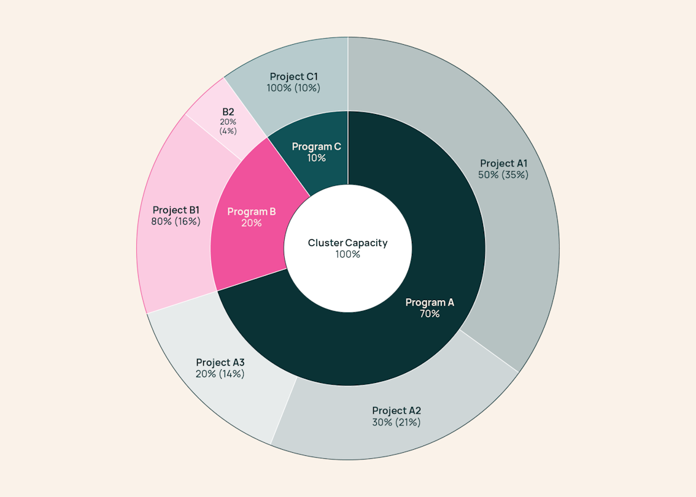
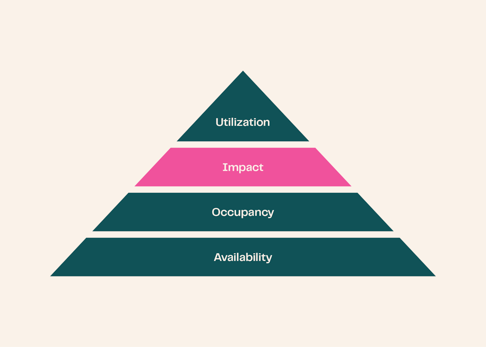
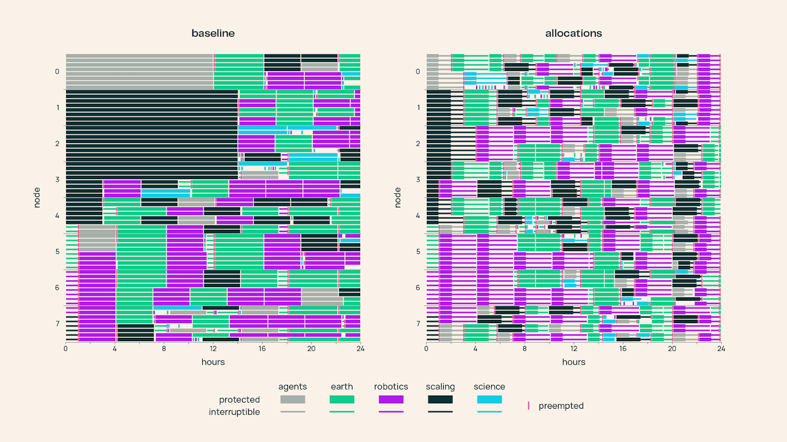

Ai2管着数千张H100/B200/B300，150个研究员的需求常年是供给的2到3倍。基础设施团队把优先级调度器换成了GPU时间预算加分层fair-share：不再争优先级，而是像投资人一样预先给每个研究方向拨GPU时间预算。
Ai2把GPU供给想成四层金字塔：底座是可用性（硬件健康就绪），往上是占用率（可用时间分给具体负载的比例），再往上是影响力（最有价值的负载拿到资源的频率），塔尖是利用率（负载生命周期里GPU容量的使用比例）。调度改造瞄准的是第三层：让调度决策更有影响力。
旧系统是优先级调度，允许任务声明不可抢占。病状很典型：GPU蹲点，有人长期挂no-op任务占着，需要时再连上去，因为正常提交debug任务延迟太高；优先级通胀，最后100% 的任务都标HIGH，低优先级彻底饿死；on-call工程师大半工单时间花在跟不可抢占任务的owner谈判关机，因为机器要维护。
团队一开始没认出这是公地悲剧：个体争稀缺共享资源，各自最优加总成全局最差。先是收紧优先级审批，后来直接给重点项目划GPU垄断区。垄断太粗：研究的季节性让GPU闲置，A团队没活时B团队还在排队。等于在手工解背包问题，把动态变化的研究需求塞进静态排期。
公地悲剧的经典解是私有化。团队迭代了所有权模型：不发GPU，发GPU时间。未来需求预测不了，但研究方向的优先级是战略问题，可以预先辩论决定。让管理层像投资人：在负载出现之前，按判断的影响力给每个研究方向拨GPU时间预算，调度器拿这个信息做优先级。
分层系统里manager按比例把GPU时间拨给负责的项目和研究员。Project A1知道自己有总容量的35%，不管别处排多少队。每个GPU时间请求必须有预算买单，否则不受抢占保护。旧系统里HIGH不要钱、不可抢占能把并发上限填满，所以人人都用。现在什么都不免费，任何占GPU的trick都从受益人的预算里扣：蹲点的任务是在烧团队预算买空气。策略是让钻调度器空子的成本高于老实去争预算。

预算评审持续迭代，关键要求是研究员有频繁的机会为自己要时间，决策由最懂权衡的manager做：项目内lead研究员定，项目群内PI定，跨群lead program manager或CEO定。
配着预算工具，团队建了分层fair-share调度器管实际占用。算法不新，Hadoop Fair Scheduler 2009年就有了，SLURM和YARN今天还在用。新的是输入：树镜像研究项目结构，权重是manager定的预算而非静态配额。调度器在7天滑动窗口里跟踪占用，把欠预算的排到超预算的前面。一周维度上，只要持续提交足够需求，每组都能拿到拨给自己的GPU时间。
一位研究员的评价：新调度器感觉像多了30% 算力。旧系统里自己额度没用满的那部分就丢了，现在可以之后burst超出配额还不被抢占，等于把算力要了回来。突发负载多，这个改进很实在。

调度器分两种占用：allocated占用计入预算、影响fair-share计算、在最小运行窗口内防抢占；unallocated不计预算、从头就不防抢占、任何allocated请求都能抢。GPU永远塞满，哪怕预算和需求对不上，团队也永远不会拒绝免费算力。
分布式训练的麻烦是任务跑得太长，一跑几周，别人拿不到自己的预算时间，蹲点也因此可能。团队引入调度合约：换取上机资格，任务必须声明最小运行时间，即做出有意义进展的最短占用。这段时间防抢占，研究员有进展保证，调度器有权在进展落袋后重平衡，自动重排可恢复任务。最小运行设0就是unallocated，随时可抢但不扣预算。
任务生命周期：提交带最小运行和是否可恢复；按fair-share排（权重是窗口内实际占用相对拨款的比）；跑最小运行，计入预算；拨款继续优先就接着跑，也计预算；可被抢占重排回第二步；完成释放。这一套给调度器加了时间片：运行中的任务可被移走重排，fair-share收敛，蹲点没意义。坏机器也能等任务跑完最小运行自动排空，维修全自动化。需要人工介入的维修降了74%，on-call负担大减。
调度策略零和，给A时间就是从B手里拿，输家会找新空子。上线前团队建了仿真器：输入任务集和提交计划，模拟抢占与GPU分配决策，几秒跑完好几天的排队等待、抢占事件、各项目GPU时间分布。拿历史提交数据和构造场景都测过，可调旋钮比如窗口长度、最小运行上限（定了8小时）。
一个想验证的假设是debug任务：只要少量GPU、15分钟以内最小运行，够看任务是起来还是early crash。直觉上小任务该排前面，但排队延迟的具体数字决定新开发范式是否可行：等一两分钟能用，等十分钟不行。仿真支持了假设，p90 debug等待从约6小时降到5分钟。
7月底逐集群上线。30天看：团队拿到了98% 应得GPU时间（应得按拨款逐小时封顶实际需求算），15个团队拨款里13个拿到95% 以上，最差90%。集群占用率前后都是98%，需求一直是容量的2到3倍。18% 的交付时间是unallocated，靠它在有预算没需求时段塞满GPU。
仿真方向准，实际超预期：debug任务p90排队从2小时降到30秒（仿真预测6小时到5分钟）。时间片的副作用是整体排队延迟改善：最大H100集群中位等待从5分钟到24秒，p90从2.8小时到1.8小时。

对照最初的三个问题：蹲点，debug任务一分钟内启动，蹲的成本还从自己预算扣；优先级通胀，优先级还在但只影响团队内部排序，manager有动力盯着它优化预算使用；on-call，坏机器自动排空，人工维修降74%。
代价也有。交互式会话（数据分析、边写边测训练代码）旧系统能hold一周，新系统8小时保护上限一过就可能被抢。被抢要重排队还要手工重建状态。调研后团队立了两个roadmap：搞CPU-only集群放数据准备类dev会话，把训练集群留给真需要的负载；给CPU会话做可恢复快照，抢占后别处恢复，不用人手工重建。
学习曲线比预想陡。渐进上线导致早期各集群行为不一，界面还留着优先级等旧术语但含义变了，文档没讲清。管用的是直播讲解会：研究员提问，工程团队拿真实例子讲调度为什么这么排。从民间理论林立转到现在各组主动聊GPU需求，预算讨论也更清楚权衡了。上线后还加了可视化：自己的GPU时间跟拨款差多少、队列排序用的指标，被抢时一眼看懂为什么。
潜在问题在盯：容量碎片化，大任务排队可能变长。直觉是最小运行保护给了以前靠可抢占机制超配额的任务类型，以前那些任务随时可断、浪费但好排大任务，现在调度器一次打断很多任务腾地方的机会少了。正在用仿真器复现，同时测生产ground truth。
参考：https://allenai.org/blog/impactful-scheduling